🎮 HomeseekerS-Gamein Projects
AA Color Hit
A ragdoll-based physics challenge where players aim and throw at a rotating target. Built using Unity 2D Physics for perfect collisions and dynamic score feedback.
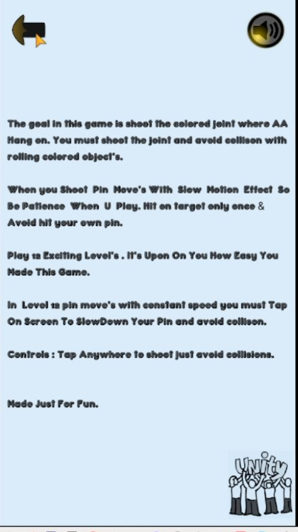
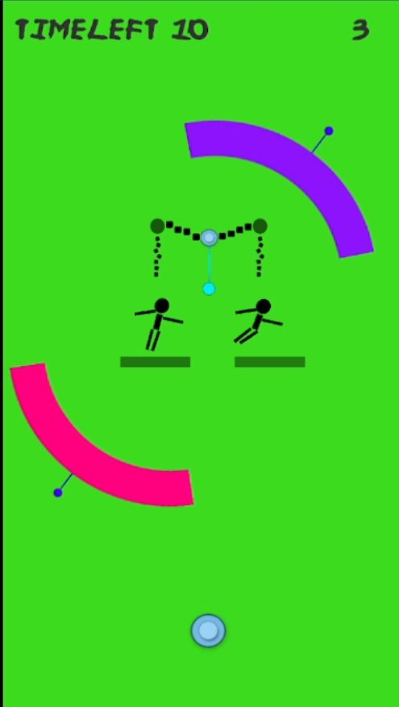
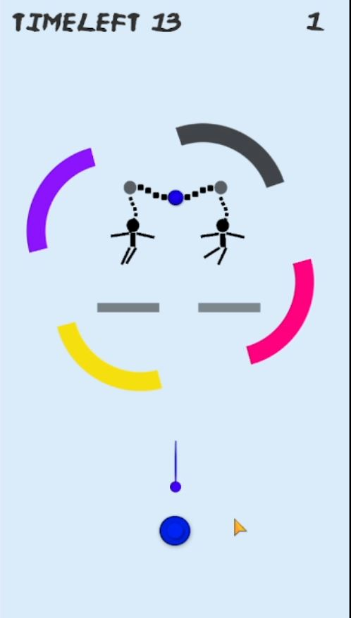
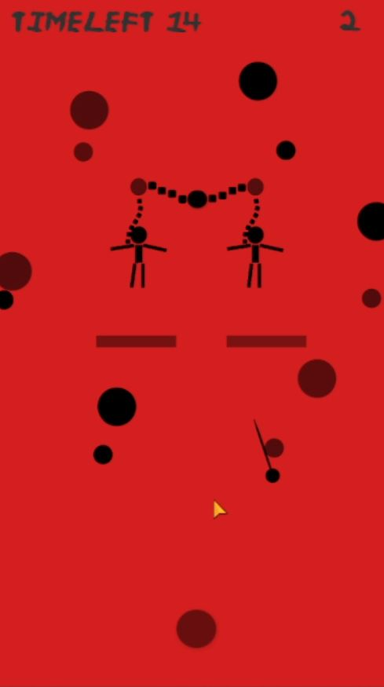
AR Dragon Experience
This AR project lets users bring a 3D animated dragon into the real world. Built with Unity AR Foundation — experience real-time scaling, tracking, and animation sync with the camera feed.
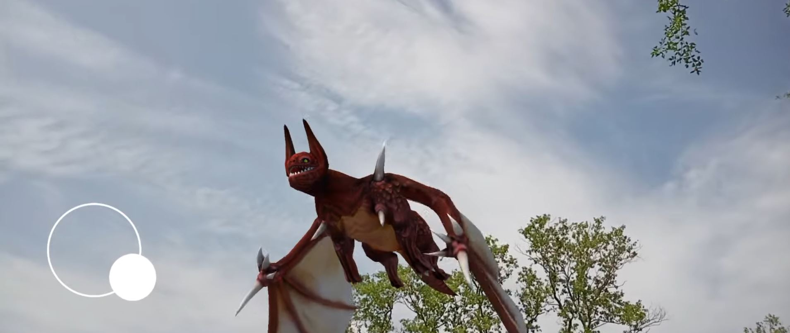
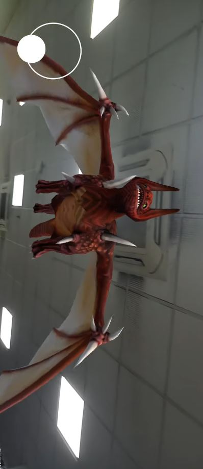


Dus Ka Dum Quiz Game
Inspired by the TV game show, this project features interactive question-answer gameplay, score tracking, and timed challenge rounds — designed for desktop and mobile.
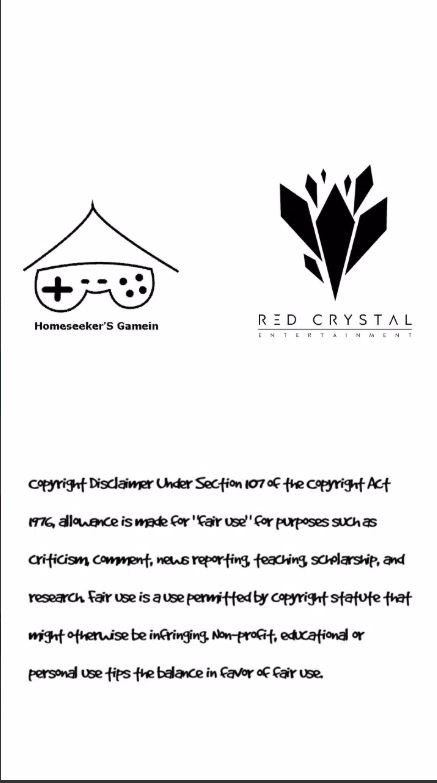
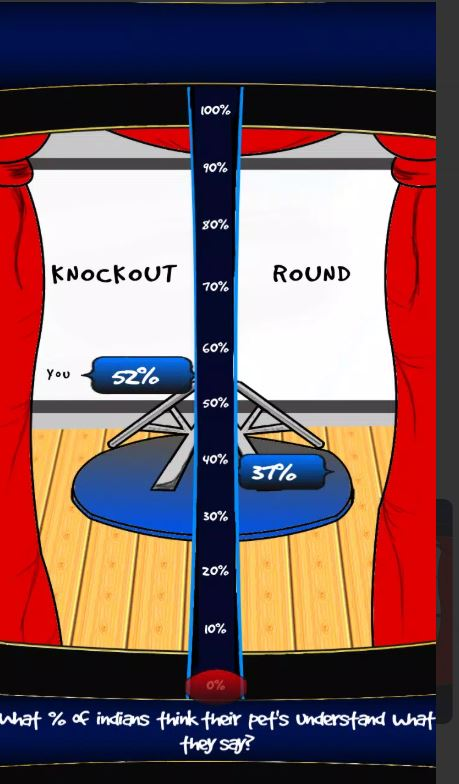
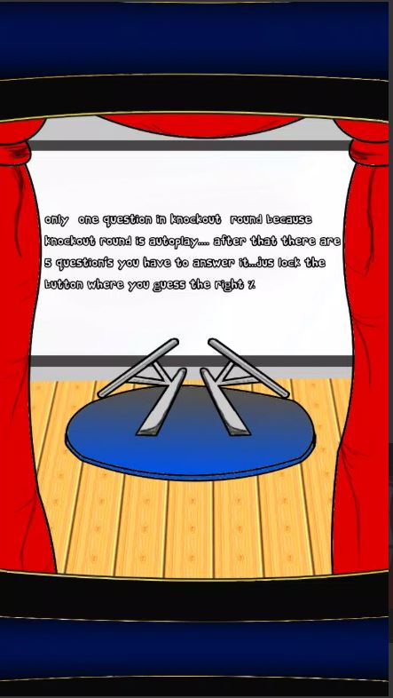
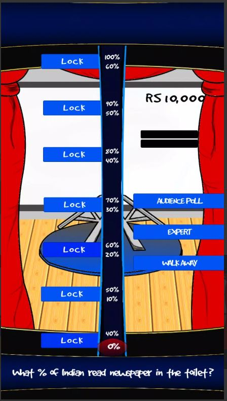
Memorise Switch Color
A fast-paced memory puzzle where players switch between colors and patterns to score points. Features dynamic animation, UI feedback, and incremental challenge levels.
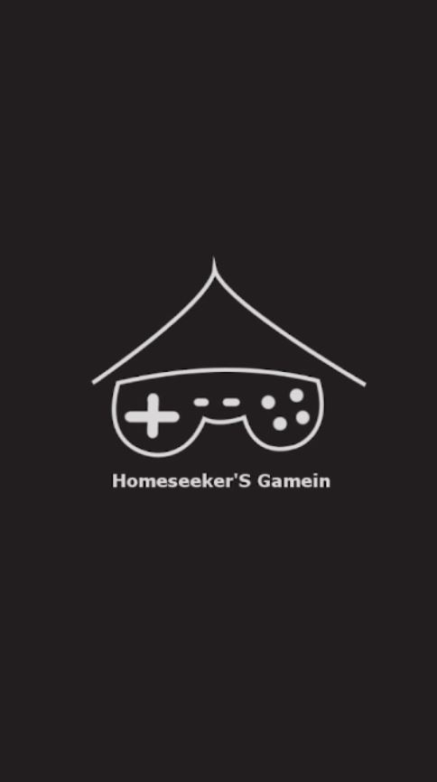
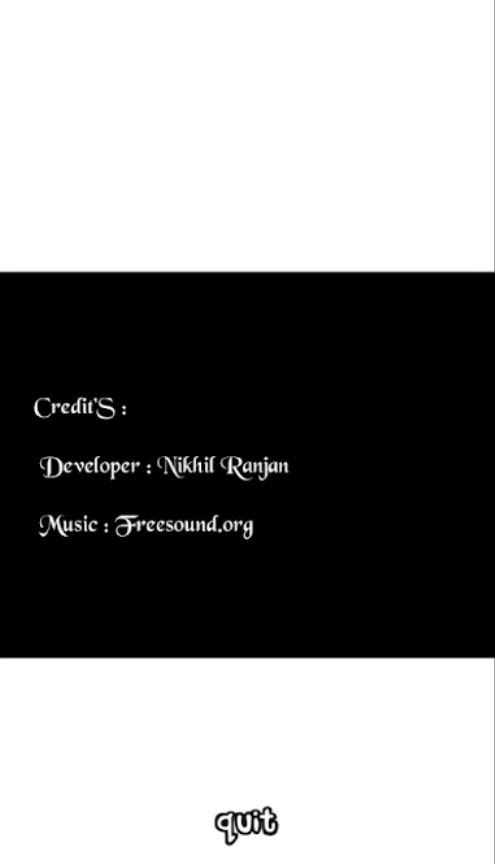
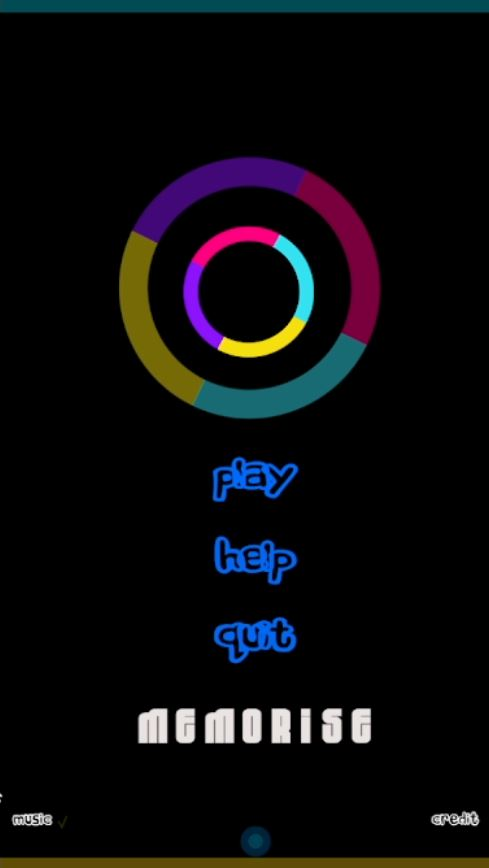
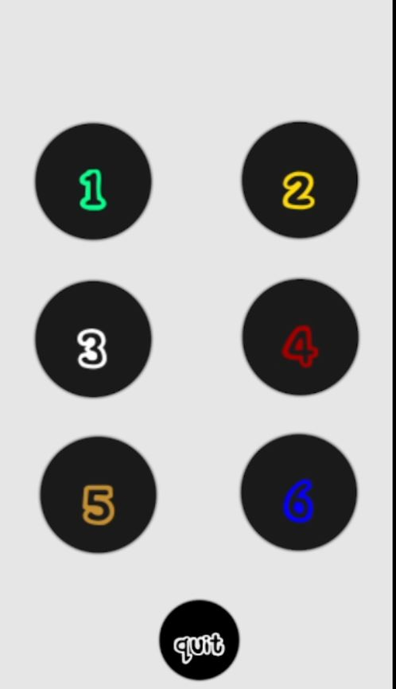
▶ Watch Demo